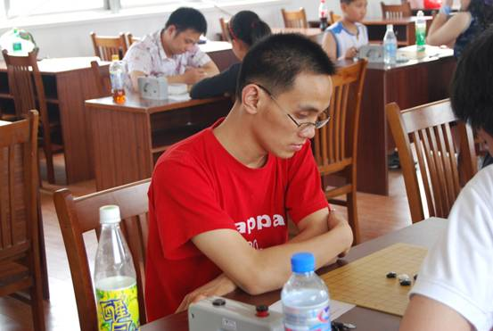

康岩
#1 康岩作者：被感动的人 发表时间：2011-7-18 12:00:59

康岩，本站ID:小丸.net，江苏棋手、五子棋推广者、软件《五子妙手》作者、本站技术工程师兼管理员。
·擅长、喜欢的游戏：五子棋、三国杀、魔方。欢迎有兴趣的找他进行交流。
·爱好：戏曲（爆料一下，本站除了丸子外，还有一个知名棋手喜欢戏曲，他们之间也经常交流听戏心得，大家猜一下是谁？<某公已经被本站封杀，他不算>）(猜出奖励1威望)
·联系方式与交流方式：QQ：5050849微博 http://t.qq.com/jingyiju
以上文字由其本人自述，笔者搜集整理发布。
主要成绩：
2003年开始下棋，与幽兰共同组建苏系网络社团，后因想发展江苏现实社团脱离苏系，2003年与有志青年组织江苏内部交流赛，后协助有志组织江苏-上海地区交流赛，苏沪交流赛去年已经完成了第三届。
2006年发表他的第一五子棋软件《五子妙手》，一直更新至今，占得了五子棋打谱市场的一席之地。
2007参加第五届浙江 #2 Re:康岩作者：小丸.net 发表时间：2011-7-18 12:36:24 这张照片不太好看，过几天贴张好看的。 ［ 被感动的人 于 2011-7-18 12:44:07 时花20金币送鲜花一朵］ ［ 岑小鱼 于 2011-7-18 12:57:43 时花20金币送鲜花一朵］ #3 Re:康岩作者：被感动的人 发表时间：2011-7-18 12:44:00 哇，我也得威望了诶！！！ 丸子，我觉得你的红背心挺好看的 #4 Re:康岩作者：小丸.net 发表时间：2011-7-18 13:01:15 #5 Re:康岩作者：虎哥 发表时间：2011-7-18 13:08:56 #6 Re:康岩作者：自来水 发表时间：2011-7-18 13:10:10 #7 Re:Re:康岩作者：掌棋宣传员 发表时间：2011-7-18 14:34:07 这张照片不太好看，过几天贴张好看的。 你也爆个裸照,给你准备10朵鲜花 #8 Re:康岩作者：掌棋如烟 发表时间：2011-7-18 14:36:44 咯,,刚才楼上发帖忘了换自己号了 PS: 这个帖子总结的好,发现很多老的有趣的帖子 #9 Re:Re:康岩作者：非黑既白 发表时间：2011-7-18 17:49:02 #10 Re:康岩作者：以和为贵 发表时间：2011-7-19 9:27:11 五子连珠腾妙手 论坛佳贴看小丸 #11 Re:康岩作者：与郎共五 发表时间：2011-7-19 10:06:44 #12 Re:康岩作者：非黑既白 发表时间：2011-8-7 20:01:58 #13 Re:康岩作者：三国老凯 发表时间：2011-8-8 0:16:38
 喜感
喜感引用：
原文由 小丸.net 发表于 2011-7-18 12:36:24 :引用：
原文由 小丸.net 发表于 2011-7-18 13:01:15 :
那件红“背心”（貌似不是背心）是处理货，19块钱买的。。。kappa的。  对，土豆不是马铃薯。太奢侈了花那么多钱买褂子
对，土豆不是马铃薯。太奢侈了花那么多钱买褂子
 顶
顶